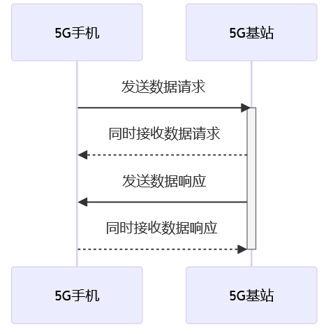

5G技术概述
摘要
随着技术的快速发展，移动通信已经从最初的1G网络逐步演变到4G的广泛部署。本文深入探讨了第五代移动通信技术——5G的定义、特点和潜在影响。本文首先回顾了移动通信的历史，从模拟技术的1G到4G的高速数据传输，强调了每一代技术如何塑造人类的生活和工作方式。本文指出，21世纪的移动通信正面临前所未有的繁荣与变革，特别是随着智能设备和大数据应用的兴起。为了满足这些新的技术需求，5G技术应运而生。本文详细分析了5G的关键技术组件，包括毫米波技术、大规模MIMO、全双工通信、网络切片，以及为5G通信提供高效率和可靠性的极化码技术。这些技术组合为5G提供了前所未有的数据传输速度和低延迟性能，使其成为支持物联网、虚拟现实和其他创新应用的理想选择。总的来说，5G技术不仅是前一代技术的简单进步，它预示着一个多连接、超高速、低延迟的未来，为全球经济和社会带来了巨大的潜在影响。
关键词：毫米波；大规模MIMO；全双工通信；网络切片；极化码
1 引言
在技术的长河中，每一次波澜壮阔的变革都为人类社会带来了前所未有的机遇和挑战。从最初的电话通信到如今的全球移动网络，通信技术的每一次飞跃都重塑了我们的日常生活和商业模式。从最初的 1G 网络，到 4G 的广泛部署，每一代技术都以其独特的方式改变了人们的生活和工作方式。而今，我们正站在一个全新的技术革命的前沿——5G。作为第五代移动通信技术，5G 不仅仅是前一代技术的简单进步，它预示着一个多连接、超高速、低延迟的未来。此报告旨在深入探讨5G技术的定义、特点、技术核心、应用及其对全球经济和社会的潜在影响，为读者呈现一个全面的5G技术图景
2 研究现状
2.1 移动通信的历史回顾
自1980年代初推出的1G开始，移动通信经历了显著的变革。1G基于模拟技术，主要支持语音通信。随后，2G引入了数字技术，不仅提高了通话质量，还支持了简单的数据服务如短信。进入21世纪，3G带来了更快的数据传输速度，使得视频通话和移动互联网成为可能。最后，4G进一步加快了数据速度，为高清流媒体和更复杂的在线应用提供了支持。
2.2 21世纪移动通信的需求与挑战
21世纪的移动通信迎来了前所未有的繁荣与变革，伴随着智能设备的日益普及和大数据应用的兴起。人们不再满足于简单的语音通话，而是追求高清视频、无缝的在线协作和实时的大数据交互。同时，随着物联网的兴起，从家用电器到城市基础设施，越来越多的设备需要接入网络。这不仅带来了对更高带宽和更低延迟的迫切需求，还对网络的稳定性和安全性提出了更高的要求。如何满足这些需求，同时应对频谱资源有限、网络安全威胁增多等挑战，已成为当代移动通信领域面临的关键课题。
2.3 前驱技术的局限性和为什么我们需要5G
前驱技术，尤其是4G，虽然为我们提供了快速的网络连接，但在处理大量设备连接、超高速数据传输和低延迟应用方面仍存在局限性。随着物联网、虚拟现实和自动驾驶等技术的兴起，对网络的要求也日益增长。5G应运而生，不仅为了满足这些新的技术需求，还为解决4G无法覆盖的领域提供了解决方案，从而推动数字化的下一步发展。
3 5G技术的具体内容
3.1 频率与毫米波
5G的一个关键指标是传输速率：按照通信行业的预期，5G应当实现比4G快十倍以上的传输速率，即5G的传输速率可实现1Gbps。无线传输增加传输速率一般有两种方法，一是增加频谱利用率，二是增加频谱带宽。但相对于提高频谱利用率，增加频谱带宽的方法显得更简单直接，在频谱利用率不变的情况下，可用带宽翻倍则可以实现的数据传输速率也会翻倍，但问题是，现在常用的5GHz以下的频段已经非常拥挤，所以为了获得新的频谱资源，人们想到的方法是使用毫米波技术。
5G技术在频率选择上涵盖了从低至高的多个范围，其中毫米波是高频段的代表。毫米波是指波长在毫米级别的电磁波，其频率通常在30GHz到300GHz之间。这一频率范围位于微波与红外波之间。
根据通信原理，无线通信的最大信号带宽大约是载波频率的5%左右，因此载波频率越高，可实现的信号带宽也越大。在毫米波频段中，28GHz频段和60GHz频段是最有希望使用在5G的两个频段。28GHz频段的可用频谱带宽可达1GHz，而60GHz频段每个信道的可用信号带宽则到了2GHz。相比而言，4G-LTE频段最高频率的载波在2GHz上下，而可用频谱带宽只有100MHz。因此，如果使用毫米波频段，频谱带宽可以轻松达到4G标准的10倍，并且传输速率也可以得到很大的提升。
毫米波频段的另一个特征是它由于波长较短，穿透力差，在空气中衰减较大。因此毫米波几乎不可能实现信号穿墙传输，且传输距离较短。因此人们或许会感到遗憾，这项技术不太适合在室外手机终端和距离基站比较远的地区，这就使得5G在布局上需结合其他频率以实现全面覆盖，这也是为什么现在在很多情况下依然需要使用4G的原因。
为了解决这个问题，其中一个方案就是采用微型基站。在现在，信号的传输是通过一个大型高功率基站进行传输，由于不会过多的被介质影响，所以通过大功率传输能覆盖更多的设备。但是如果使用毫米波，人们和基站之间有介质格挡，则很难收到信号，为此人们采用用上千个低功耗小型基站进行首发信号来代替现在的大型基站。
但这个并不意味着穿透力差就没有价值，因为与此同时，其他终端发出的毫米波信号的衰减也会很大，如果设计得当，则不需要考虑来自其他毫米波信号源的干扰。选择使用60Hz毫米波更是很好的利用了这点，因为60Hz正是氧气的共振频率，其信号在空气中衰减会非常快，从而很大程度上减少了来自不同终端的干扰。
3.2 大规模MIMO (多输入多输出)
MIMO是“多输入多输出”（Multiple Input, Multiple Output）的缩写，是一种无线通信技术，通过在发送和接收两端使用多个天线来提高无线系统的性能。在物理空间中，多个天线之间存在多个独立的传播路径。MIMO技术通过这些不同的路径同时发送和接收多个数据流，从而提高数据速率和/或信号质量。
而5G使用的大规模MIMO技术区别于传统4G MIMO的最多8天线通道，大规模MIMO[2]在5G中实现16/32/64通道。5G的大规模MIMO技术就是大量天线的波束成形。
波束成形是一种无线通信技术，旨在控制发射的无线信号波束的方向，从而优化信号的传输效率和质量。通过精确地指向接收设备或避免潜在的干扰源，波束成形有助于提高信号质量、增加数据传输速率和扩大覆盖范围。随着5G技术中MIMO系统天线数量的增加，波束成形通过生成不同方向的波束如垂直波束和水平波束，形成了3D模式的波束成形，其借助移动终端的反馈，可以定位到空间中任意一个点，以提升面向具体对象的数据传输速率和容量。
大规模MIMO因为波束成形后天线的波束非常窄，并且可以精确的为用户提供覆盖，故可以很大程度上减少对其他通信信号的干扰。
3.3 全双工通信
5G技术的全双工通信[3]是5G通信技术中的一个重要组成部分，它允许在同一时间、同一频段上进行双向通信。这与传统的半双工和单工通信方式不同，它们只允许在给定的时间或频率上进行单向通信。使用全双工技术可以提高频谱效率，因为它允许在同一频段上同时进行发送和接收。这意味着运营商可以在现有的频谱资源上提供更高的数据速率和更多的用户连接。
这种全双工技术的实现主要依赖于先进的自干扰消除技术。在全双工通信中，设备在同一时间、同一频段上进行发送和接收。这意味着发送的信号有可能对接收的信号产生强烈的干扰，这种干扰被称为自干扰。自干扰的存在严重影响了全双工通信的性能和可靠性。
为了成功实现全双工通信，必须有效地消除或至少大大减少这种自干扰。自干扰消除技术主要分为数字和模拟两大类。
在模拟领域，自干扰消除的方法主要集中在射频前端的设计。首先，天线设计和放置策略起到了关键作用。通过使用天线隔离技术，可以减少发送和接收天线之间的相互干扰。此外，方向性天线和波束成形技术也被用来进一步减少发送和接收路径之间的干扰。
数字自干扰消除则依赖于先进的信号处理算法。这些算法能够实时地估计和消除自干扰，确保接收到的信号质量。这通常涉及到复杂的自适应滤波器，它们可以根据当前的通信环境动态地调整参数，以最大限度地减少自干扰。上文提到的MIMO技术，也在数字自干扰消除中发挥了重要作用。通过使用多个天线，系统可以更好地估计和消除自干扰。
3.4 网络切片
在物联网技术快速发展的今天，接入互联网的设备数量剧增，要实现从人-人连接到万物连接，连接的数量成倍上升，网络必将愈发拥堵，越来越复杂。因为我们就得像交通管理一样，对网络实行分流管理，即网络切片。
在人群密集的场所，4G网络就会变得很慢，出现这种情况的原因是，假设一个基站相当于一个路由器，而附近的用户全部连接到该基站上，基站所提供的带宽是有上限的，一旦连接的人数过多，速度会变得很慢，这就是大家常说的“抢网速”，网络切片就可以解决这个问题。通过将5G网络分成很多片，每一片满足不同用户的需求。这是因为不同用户对于网络的需求是不同的，比如直播用户对上传要求更高，游戏用户则要求延迟低。网络切片技术则可以针对性的为不同用户提供不同的网络能力，从而满足不同业务场景对于网络的需求。
我们将5G网络的应用场景划分为三类：移动宽带、海量物联网和任务关键性物联网。
| 5G应用场景 | 应用举例 | 需求 |
|---|---|---|
| 移动带宽 | 4K/8K视频、全息技术、AR、VR | 高容量，视频存储 |
| 海量物联网 | 海量传感器（部署于测量、农业、智慧城市、家庭等） | 大规模连接且大部分静止 |
| 任务关键性物联网 | 无人驾驶、自动工厂、智能电网等 | 延时低、高可靠性 |
我们并不需要为每一类应用场景构建一个网络，我们要做的是，将一个物理网络分成多个虚拟的逻辑网络，每一个虚拟网络对应不同的应用场景，这就叫网络切片。
网络切片是一种网络虚拟化技术，它将单一的物理网络分割成多个逻辑网络，每个逻辑网络都有其独特的网络资源、功能和优化策略。网络切片的创建和管理依赖于5G核心网络中的多个关键组件，包括网络切片子系统、网络功能虚拟化基础设施(NFVI)和服务基于编排系统。这些组件共同确保网络切片可以动态地创建、修改和删除，以满足不断变化的业务需求。
网络切片技术可以比喻为一栋大楼的多个独立公寓。想象一下，这栋大楼（物理网络）有多个公寓单元（网络切片），每个公寓单元都有自己的入口、客厅、卧室和厨房（网络资源和功能）。尽管所有的公寓单元都位于同一栋大楼内，但每个公寓都为其居民提供了独立、私密的生活空间。
每个公寓可以根据其居民的需求进行定制，例如，一个三口之家可能需要一个带有儿童房的大公寓，而一对新婚夫妇可能只需要一个小公寓。同样，网络切片可以根据不同的业务需求进行优化和定制。例如，某些切片可能被优化用于高速数据传输，而其他切片可能被优化用于低延迟通信。
此外，就像大楼管理员可以根据需要增加或减少公寓单元，网络运营商也可以动态地创建、修改或删除网络切片，以满足不断变化的业务需求。
4 5G的数据传输
4.1 数据传输以及与4G相比的优势
- 速度：理论上，5G的峰值下载速度可以达到20Gbps，而上传速度可以达到10Gbps。然而，实际使用中的速度可能会受到多种因素的影响，如网络拥塞、用户距离基站的远近等。在实际部署中，用户可以期望在城市和其他高密度地区获得1Gbps到3Gbps的速度。而4G LTE的峰值速度通常在1Gbps以下。这意味着5G的速度是4G的多倍。
- 容量：5G技术采用了更高效的编码和调制方案，使得每赫兹的频谱可以传输更多的数据；5G还利用了更多的频谱资源，包括毫米波频段，这为更高的数据速率和更大的网络容量提供了空间；通过部署大量的小型基站，5G网络可以在相同的地理区域内支持更多的用户和设备
- 延迟：5G的延迟可以低至1毫秒，而4G的延迟通常在30-50毫秒之间。低延迟对于实时应用如在线游戏、自动驾驶汽车和远程手术至关重要。
- 连接密度：5G可以支持每平方公里内多达100万个连接设备，而4G的连接密度远低于这个数字。这使得5G更适合物联网应用。
4.2 数据的编码与调制
5G的通信编码是为了确保在无线信道中高效、可靠地传输数据。在5G中，特别引入了两种先进的信道编码技术：极化码Polar Codes[5]和低密度奇偶校验码LDPC。
4.2.1 信道模型
通信过程中，物理层传输的就是电信号，假如我们只用0和1传输信号，并且这些信道互相都没有关系，我们称为二进制离散无记忆信道。信道模型是研究信道编码的基础，常见的几种信道模型分别有：二进制删除信道（BEC）、二进制对称信道（BSC）、高斯信道（AWGN）。设信道的输入和输出分别是长为N的序列，输入是x，输出是y，其信道的转移概率满足：
二进制删除信道，简记为BEC。称为删除概率，表示有 的概率这个信号会丢失。当接收方得到一个位，它是100%确定的位是正确的。只有当位被擦除时，才会出现唯一的混淆。对于二进制离散无记忆信道，我们有 的概率丢失0或者1的比特位。BEC的信道容量为：
4.2.2 极化码
极化码的核心是信道极化。这个过程通过特殊的“合成”操作，将多个独立的二进制删除信道（BEC）转换为两类极端信道：一类几乎无错误，另一类错误率很高。理论上，当这种合成操作重复多次时（即信道数量趋向于无限），完美信道的比例将接近信道的初始容量。在这些“极化”信道中，信息被发送通过接近完美的信道，而冗余信息（用于错误更正）被放置在质量较差的信道中。
假设有一个二元消除信道（BEC），其消除概率为，我们假设其为0.5。这意味着发送的比特要么不变，要么被“消除”变成一个未知状态，标记为“？”。
现在，我们创建两个并行的 BEC 信道，并应用极化变换。为了简化，我们考虑发送两个比特，U1 和 U2。我们通过以下方式将其转换为 X1 和 X2：
X1通过信道一在接收端得到Y1，X2通过信道二在接收端得到Y2，由于异或算的特性，且BEC信道如果传输成功那么一定是正确的的特点，我们可以得到
由这三个已知条件进而可以得到 ，如果将中间的模型视作一个黑箱，我们可以得到输入U1的影响，扩散到Y1、Y2两个值里面，即
这个过程在理论上可以看作是产生了一个新的信道，取 。这里U1能解出来的前提是两个BEC信道都传输成功，但实际上是因为信道的不完美性（例如噪声），我们得到的结果可能有不同的组合如下：
也就是说在信道里，信息传输成功的概率由 变成了，被擦除的概率变为了，我们前面假设，那么信道中的信息将有75%的概率被擦除，相较于开始的50%,信道明显变差了。
现在解码U2，由于U2可以由U1和Y1异或得来，我们可以得到输入U2的影响，可以扩散到Y1、Y2和U1三个值里，取名为，可以得到如下情况：
信道只有一种可能信被擦除，被擦除率为 ，的擦除率由开始的50%变为了25%。在的这种情况下，可能无法确定U1的值，所以在这里的思路是U1的值提前约定好，在接收端不用解码，直接用已知的U1值算出U2，这里的想法叫冻结。
如果增加信道，每个信道间都采取这种模型链接，我们会观察到，仅仅八个信道相连，就可以得到擦除概率为0.0039的信道。可以证明当信道足够多时，它们会被分成完全无噪声的好信道和完全噪声的差信道，前者传输成功的概率为1，后者为0。
只要将有效信息都编码在好信道里，舍弃无用的差信道，信息就能完全无损失的传播，这个过程就是极化。
5 5G未来方向的讨论
5.1 5G技术的短期与长期前景
5.1.1 短期前景（近五年）
- 增强的移动通信：5G将在短期内提供更高的数据速度和更低的延迟，这将使用户能够享受更快的下载速度、更流畅的视频流和更快的网页加载时间。这对于智能手机、平板电脑和其他移动设备的用户来说将是一个巨大的改进。
- 物联网的爆发：5G的低延迟和高容量将推动物联网的爆发。这将带来更多的智能家居设备、智能城市解决方案、智能工业和医疗设备，从而改善生活质量、提高效率并创造新的商机。
- 自动驾驶汽车：5G将为自动驾驶汽车提供关键的通信基础设施，使它们能够实现更高级别的自动化，同时提高安全性。短期内，我们可以预期看到更多的汽车制造商推出与5G通信集成的自动驾驶功能。
- 增强现实和虚拟现实：5G将为增强现实（AR）和虚拟现实（VR）提供更稳定、高清的图像传输，这将改善游戏、娱乐和培训等领域的用户体验。
- 新的商业机会：5G将为企业带来新的商业机会，包括增强的云计算、边缘计算和工业自动化。这将改变许多行业的商业模式，推动创新和竞争。
5.1.2 长期前景（五到十年以及更远的未来）
- 工业4.0的推动：5G将成为工业4.0的关键驱动力，加速制造业的数字化转型。自动化、智能制造和远程监控将在制造业中变得更加普遍。
- 医疗保健创新：5G将推动远程医疗、医疗影像传输和医疗设备的进一步发展，提高医疗保健的可及性和效率。
- 教育和培训：5G将改变教育和培训方式，使远程学习、虚拟实验室和远程培训更容易实现，提高教育的质量和可及性。
- 新兴技术的崛起：长期来看，5G将为新兴技术如人工智能、区块链、量子计算等提供更快的数据传输速度和更强大的计算能力，促进这些领域的创新。
总之，5G技术在短期和长期内都将对社会和经济产生深远的影响，带来更快的连接、更多的创新和更多的商机。然而，它也可能带来一些挑战，如网络安全和隐私问题，需要得到妥善处理。
5.2 对未来移动信息技术的推动
5G技术将在未来移动通信技术领域产生革命性的推动作用。其高速、低延迟和大容量特性将极大地提升了移动通信的性能水平。用户将能够以前所未有的速度下载和上传数据，享受更高质量的通话和视频通信，以及更快速的互联网浏览体验。
5G的影响还将深远到物联网领域，将数十亿台智能设备连接到网络，并实现实时数据传输和互联。这将推动智能家居、智能城市、智能交通等领域的发展，为人们的生活带来更多便利和智能化解决方案。
此外，5G技术将为自动驾驶汽车提供关键支持，实现更高级别的自动化和实时通信，从而提高交通系统的安全性和效率。
总之，5G技术将引领未来移动通信技术的发展，为用户提供更快、更可靠的连接，同时也将催生出许多新的应用和商业机会，深刻地改变了人们与移动信息技术互动的方式。
6 总结
本文深入探讨了5G技术的发展及其对全球通信领域的革命性影响。从最初的1G模拟技术到4G的高速数据传输，移动通信技术已经经历了几十年的演变。每一次技术的进步都为社会带来了巨大的变革，重塑了人们的生活和工作方式。然而，随着21世纪对高速、低延迟和高可靠性通信的需求日益增长，尤其是在物联网、智能设备和大数据应用的推动下，现有的4G技术已经难以满足这些需求。这为5G技术的发展提供了契机。5G不仅预计将提供前所未有的数据传输速度，还将引入一系列创新技术，如毫米波、大规模MIMO、全双工通信和极化码。这些技术将确保5G能够支持未来的技术应用，如物联网、虚拟现实和增强现实。
总的来说，5G技术标志着通信领域的一个新时代，预示着一个连接更加紧密、通信更加高效的未来
参考文献
[1] 李艳林. 5G毫米波阵列天线[D].电子科技大学,2023.
[2] 李琳. 大规模MIMO系统中BFGS检测算法与实现技术研究[D].电子科技大学,2023.DOI:10.27005/d.cnki.gdzku.2022.004862.
[3] 董冽沸,汪丽珍.5G通信场景技术要点分析[J].中国新通信,2022,24(08):4-6.
[4] 田晨景,谢钧,曹浩彤等.5G网络切片研究进展[J/OL].计算机科学:1-22[2023-10-23].http://kns.cnki.net/kcms/detail/50.1075.TP.20230913.1311.024.html.
[5] E. Arikan, “Channel Polarization: A Method for Constructing Capacity-Achieving Codes for Symmetric Binary-Input Memoryless Channels,” in IEEE Transactions on Information Theory, vol. 55, no. 7, pp. 3051-3073, July 2009, doi: 10.1109/TIT.2009.2021379.